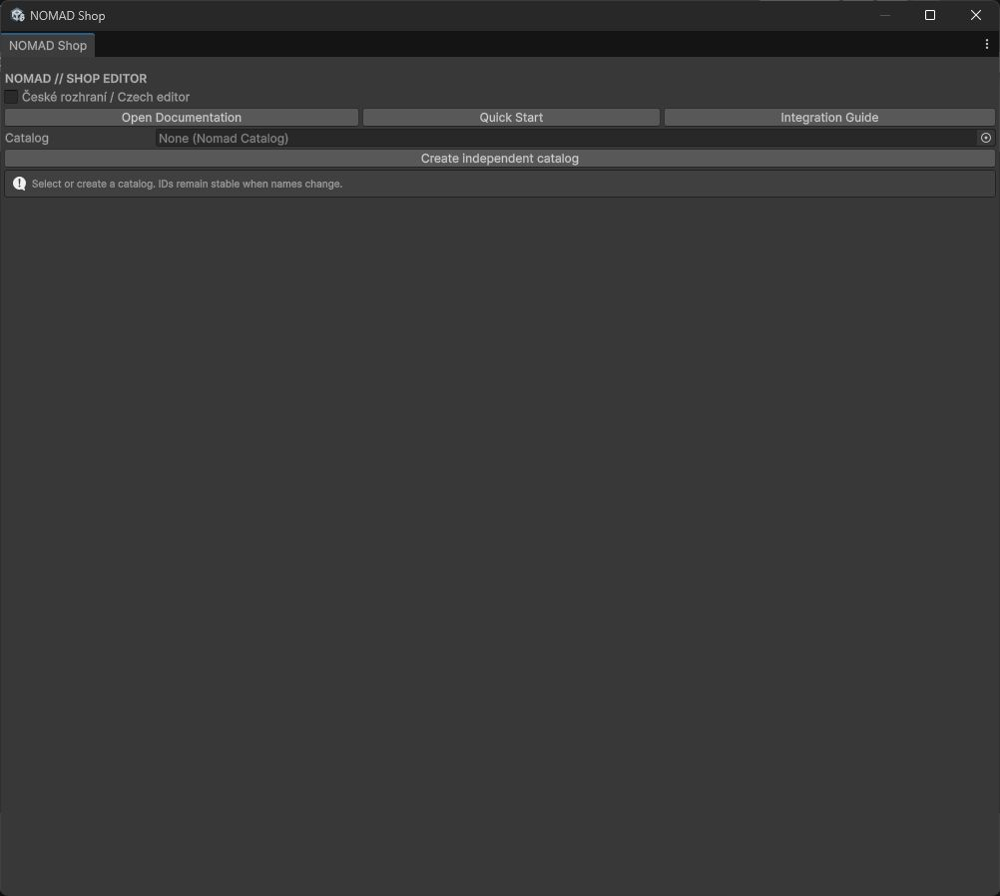
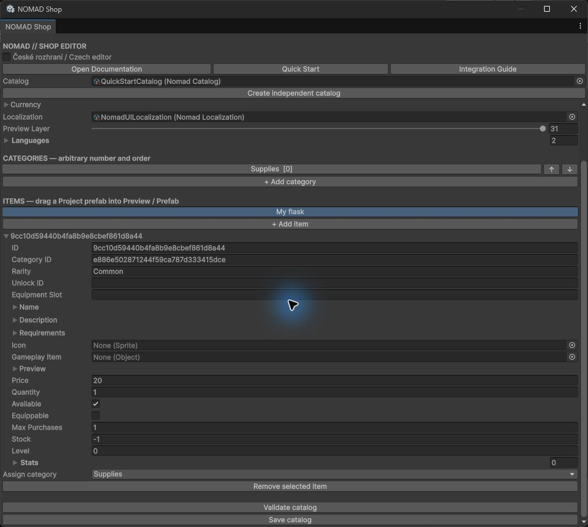
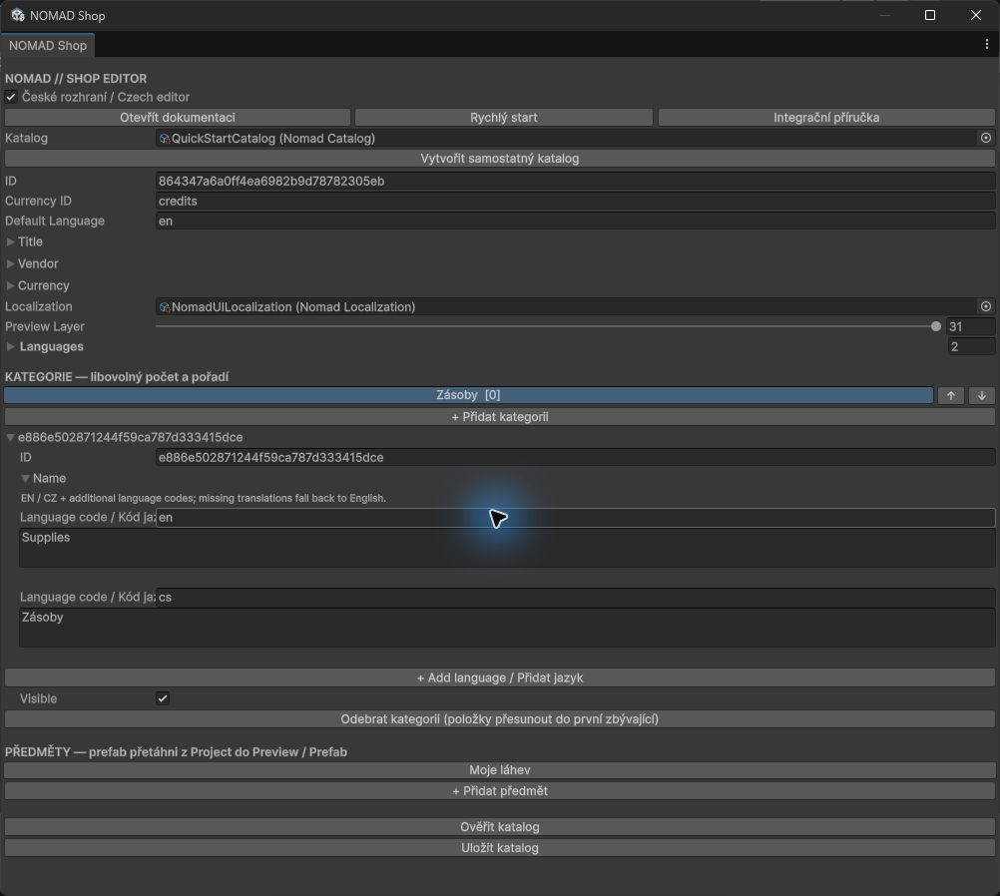
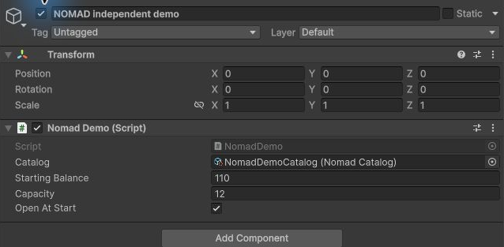

Instalace a kontrola závislostí — RC.4
OBRÁZKOVÝ PRŮVODCE
Snímky jsou skutečné Unity Editor/Game/RenderTexture z tohoto produktu. Zachycují vlastní demo, ne cizí herní assety. Anglické názvy polí odpovídají skutečnému editoru i v českém návodu.
1. Otevření Tools > NOMAD > Shop Editor bez katalogu.

2. Výběr katalogu, horní pole a odkazy na návody.

3. Přidání/výběr kategorie a rozbalení Name pro EN/CZ.

4. Výběr nového předmětu a rozbalení jeho definice.

5. Cena, množství dodávky, limity a zásoby.

6. Přiřazený Project prefab a skutečné nastavení náhledu.

7. Lokalizované záznamy obsahu; cs je kód češtiny.

8. Samostatné demo spuštěné anglicky.

9. Skutečný vlastní model v živém vieweru vykreslovaných dat.

10. Skutečné české potvrzení nákupu a změna zůstatku.

11. Objekt demo scény a odkaz Catalog komponenty NomadDemo.
